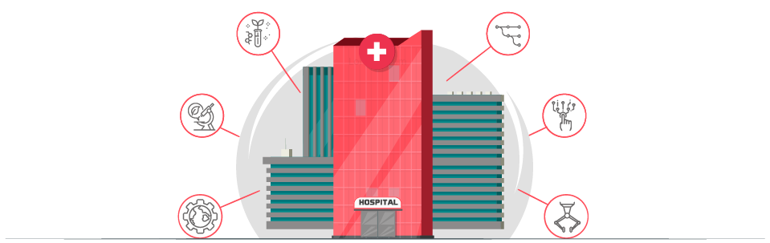
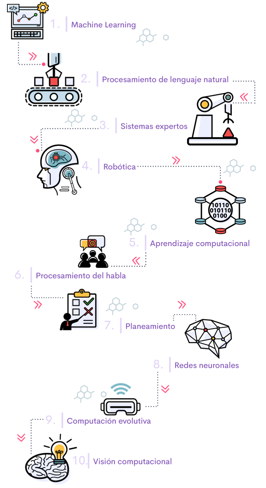

1. Tecnologías emergentes
Hola de nuevo. Hoy vamos a hacer un recorrido por las tecnologías emergentes.
Dentro de las tecnologías emergentes se identifican las siguientes:
1. Realidad aumentada
Es un complemento de la realidad humana, en la cual, con información en tiempo real por medio de textos, gráficas, audios y demás recursos, se realizan mejoras virtuales a esta realidad, potencializando los sentidos humanos (MinTic, 2020).
2. Realidad virtual
Es una tecnología que simula una experiencia real que rodea al usuario y responde a las acciones de esa persona de forma natural, a través de pantallas montadas en gafas y con el apoyo de otros sensores de movimiento que mejoran la experiencia (MinTic, 2020).
3. Machine learning
Rama de la Inteligencia Artificial (AI), cuyo objetivo es incorporar en las máquinas la capacidad de aprender automáticamente y tomar una decisión respecto a una entrada de datos (MinTic, 2020).
4. Internet de las cosas
Se refiere a la incorporación de la capacidad de interconectarse entre sí y con Internet dentro de los objetos cotidianos, habilitando la interacción entre sí y con el ambiente a través del intercambio de datos e información detectada a su alrededor, mientras reaccionan e interactúan automáticamente con los eventos del mundo físico por medio de sensores y actuadores (Oracle, 2020).
5. Contabilidad distribuida (Blockchain)
Como lo vimos en el módulo anterior, el “Blockchain” o cadena de bloques es la tecnología de registros compartidos e inmutables, lo que significa que son registros que contienen la información encriptada, es decir, que tienen una gran seguridad, lo que permite garantizar la confidencialidad de la información, ya que es casi imposible de falsificar (Pastorino, 2018).
6. Asistentes virtuales
Agente generado por computadora, con la capacidad de simular una conversación y entregar información por medio de voz o texto vía web o móvil (MinTic, 2020).
7. Hogares conectados
Se refiere a la interconexión e interoperabilidad de múltiples dispositivos tecnológicos, servicios y aplicaciones que pueden ser de utilidad para los hogares y las personas, como por ejemplo: cuidado de la salud, seguridad y automatización (MinTic, 2020).
8. Nanotecnología
Es el entendimiento y manipulación de la tecnología a escalas microscópicas (escala nanométrica que va de 1 a 100 nanómetros) (Iberdrola, 2020).
9. Computación de borde
Realiza el análisis y la generación de conocimiento en o cerca de la fuente de los datos, con el fin de optimizar el ancho de banda entre los nodos (Lanner, 2019) .
10. Contratos inteligentes
Es un código en el que se incluyen los acuerdos registrados entre dos o más partes, es decir, las obligaciones contractuales; dicho código se tiene en la computadora y se ejecuta automáticamente cuando se cumplan una serie de condiciones específicas, igualmente pactadas entre las partes.
11. Seguridad definida por software
Seguridad de la información realizada por medio de un software y no por hardware (MinTic, 2020).
12. Reconocimiento de voz
Son sistemas que interpretan la voz humana y la traducen a texto o a comandos (MinTic, 2020).
13. Generación de lenguaje natural
Es usar una rama de la inteligencia artificial (AI), para generar lenguaje a través de datos y textos (MinTic, 2020).
14. Procesamiento de lenguaje natural
Convierte un texto o audio de un discurso en información codificada y estructurada (MinTic, 2020).
15. Biometría
Permite comunicación entre humanos y máquinas por medio de partes biológicas únicas de cada individuo, por ejemplo, la huella, rostro, iris, la forma de caminar, entre otros (MinTic, 2020).
16. Visión artificial (reconocimiento de imágenes)
Rama de la inteligencia artificial (AI), que incluye métodos para adquirir, procesar, analizar imágenes reales, para que sean comprendidas por una máquina (MinTic, 2020).
17. Deep Learning
Es un tipo de Machine Learning en el que el proceso de aprendizaje de la máquina incorpora un comportamiento similar al de las redes neuronales (MinTic, 2020).
18. Inteligencia de enjambre
Es una rama de la inteligencia artificial (AI) que busca potencializar la inteligencia colectiva de los sistemas (MinTic, 2020).
19. Robótica
Se ocupa del diseño, construcción, operación y uso de entidades virtuales que permitan desempeñar tareas realizadas por el ser humano (MinTic, 2020).
20. Sistemas de recomendación
Sistema de filtrado de información que busca predecir la calificación que un usuario le daría a un elemento para emitir una recomendación sobre su utilización (MinTic, 2020).
21. Sistemas expertos
Es una aplicación de la inteligencia artificial (AI) que busca la generación de sistemas informáticos que simulan el proceso de aprendizaje, memorización, razonamiento, comunicación y toma de decisiones de quien sería un consultor experto humano (MinTic, 2020).
22. Computación afectiva
También llamada inteligencia artificial emocional, la cual incorpora y cuenta con la capacidad de reconocer, interpretar, procesar y simular emociones y sentimientos (MinTic, 2020).
23. Sistemas de apoyo a la toma de decisiones
Sistemas inteligentes basados en algoritmos de AI, que obtienen y analizan información para la toma de decisiones (MinTic, 2020).
24. Gemelos digitales
Es una réplica digital de un componente físico, la cual cambiará a medida que cambie su contraparte física (MinTic, 2020).
25. Drones
Son máquinas no tripuladas, controladas por pilotos expertos de forma remota (MinTic, 2020).
2. Hospitales inteligentes: conceptos básicos
¡Hola! A lo largo del curso hemos visto cómo la tecnología llegó para revolucionar el mundo; en este sentido, los sistemas de salud son cada vez más dependientes de las tecnologías, por lo que las instituciones prestadoras de servicios de salud deben adaptarse al cambio y a la implementación de nuevas estrategias digitales para mejorar la calidad en la prestación de sus servicios.
Es así como los hospitales se han unido a esta transformación digital, identificando oportunidades para el desarrollo tecnológico en sus instalaciones, alejándose de un modelo tradicional, para convertirse en lo que se conoce como hospitales inteligentes.
Los hospitales inteligentes no solo buscan incorporan los avances tecnológicos, informáticos y robóticos, sino que también buscan la implementación de medidas de mitigación, y preparativos para reducir el impacto de los desastres en la salud, teniendo en cuenta la relación de costo-beneficio, buscando que los hospitales no solo sean seguros, sino también compatibles con el medio ambiente y con un enfoque de atención centrado en el paciente.
Ahora bien, si observamos el estado actual de los hospitales, se puede evidenciar que la gran cantidad de usuarios, en contraste con el número de personal médico profesional disponible para prestar la atención en salud, en muchas ocasiones limita la buena atención; de ahí que la aplicación del Internet de las cosas (IoT) permite mejorar la calidad de la atención, y además, la optimización de recursos para brindar unos tiempos de respuesta más cortos por parte los profesionales de la salud.
Es importante diferenciar muy bien los términos de hospital digital y hospital inteligente, porque muchas veces llegamos a confundir estos términos; un hospital inteligente implementa soluciones que logran un gran impacto en el sistema de salud a nivel mundial, siendo capaz de demostrar que las herramientas tecnológicas aumentan la productividad y posibilitan una atención personalizada y de mayor calidad, que al final redunda en el mejoramiento del estado de salud de los pacientes.
Como lo mencionamos anteriormente, un hospital inteligente evoluciona con las nuevas tecnologías, buscando alcanzar la eficiencia operativa, la excelencia clínica y la concentración del profesional de la salud en el paciente; permitiendo a los hospitales ver las ganancias en mejores indicadores de salud y en una mejor economía de la institución.
En términos generales, dentro de las herramientas que utiliza un hospital inteligente se encuentran: dispositivos médicos, productos farmacéuticos, ciencias de la vida, TI de la salud, logística interna, administración de instalaciones y el manejo de la información, siendo esta última una de las herramientas más útiles, puesto que permite apoyar la toma de decisiones con base en lo que realmente pasa en la institución, reflejándose en el incremento de la eficiencia.
Sin duda, con la implementación de las diferentes tecnologías emergentes en los hospitales, son múltiples los beneficios que obtienen estas instituciones, entre los cuales podemos mencionar los siguientes:
A. Mejor comunicación del personal asistencial y los pacientes.
B. Tiempos de respuesta más cortos.
C. Disminución del margen de error humano.
D. Reducción de costos.
E. Monitoreo en tiempo real de diferentes variables de cada paciente.
F. Mejora de la calidad asistencial.
G. Información en tiempo real de lo que está sucediendo en sus operaciones administrativas y en el desempeño del talento humano.
H. Aumento de la eficiencia en las operaciones.
I. Monitoreo remoto de pacientes.
J. Transmisión en tiempo real de los datos de los pacientes que están siendo atendidos y los que están en espera.
La iniciativa de la implementación de hospitales inteligentes no es ajena a la realidad de un mundo que demandará cada vez más servicios de salud, por lo que la tecnología se convierte en un aliado para ayudar a optimizar procesos de esta mayor demanda, mejorando toda la cadena asociada a la atención de los pacientes, desde su ingreso hasta el seguimiento del tratamiento.
Ejemplo de hospital inteligente
El hospital pediátrico Nemours Children’s, en Orlando, Florida, integró cámaras con tecnología inteligente para aumentar la evaluación en la salud y acelerar los tiempos de respuestas ante emergencias. Debido a que se trata de un recinto enfocado en atender niños, era necesaria una constante supervisión de los infantes; además, esta integración permitió crear un Centro de Logística Clínica, donde un equipo de especialistas verifica los signos vitales de los pacientes a través de una plataforma de monitoreo central con video en vivo para cada una de las habitaciones (Tecnoseguro, 2020).
3. Data Science
¡Hola, nos encontramos nuevamente, esta vez para aprender sobre el Data Science!
El Método científico (Castán, sf) está constituido por una serie de etapas, que desarrolladas en un orden lógico, permiten obtener un resultado determinado. Sus pasos son:

Definición o planteamiento del problema = ¿Cuál es el problema que urge resolver o transformar?
Formulación de la hipótesis = ¿Qué es lo que quiero demostrar o lo que pretendo verificar?
Recoger y analizar los datos = Se realiza con el apoyo de la estadística descriptiva
Confrontación de los datos con la hipótesis
Resultados
Conclusiones
Con la ciencia de datos no solo se desarrollan y automatizan procesos, métricas y soluciones escalables a largo plazo, sino que se descubren patrones y soluciones de acuerdo con la información obtenida con el análisis de los datos. De ahí que cuando hablamos de Data Science no podemos dejar de lado el término Big Data, debido a que ambos trabajan con grandes volúmenes de datos estructurados.
Data Science es la evolución del análisis de los datos, ya que se apoya en herramientas y técnicas novedosas que permiten la obtención de datos de varias fuentes de información, tener una conectividad de los datos no relacional, trabajar con información en la nube y visualizar interactiva y en tiempo real de los datos (Management solutions, 2015).
Tratamiento de datos personales.
Registro Nacional de base de datos.
El sector salud no es ajeno a la transformación digital que está produciendo profundos cambios, de ahí que el talento humano en salud y demás profesionales que se desempeñen en esta área deben dar un salto a la incorporación de dichas tecnologías para que los flujos de información permitan apoyar la prestación de servicios asistenciales, administrativos y técnicos de una manera oportuna, confiable, eficiente y con seguridad.
En este sentido, la ciencia de datos no solo permitirá la construcción de un perfil sobre el estado de salud de la población, sino que permitirá identificar aquellos sectores que por sus características presentan un grado de vulnerabilidad mayor en dicha población, permitiendo con esto que los entes gubernamentales y tomadores de decisiones diseñen políticas públicas-sociales que promuevan el bienestar con mayor equidad y reducción de la pobreza, facilitando la focalización de los recursos y de la inversión social en el ente territorial, promoviendo proyecciones económicas, sociales e institucionales de las necesidades de salud manifiestas.
4. Machine Learning: conceptos básicos
¡Hola! Ya es claro que la información y el análisis de los datos cobran cada vez más valor en la era digital, impactando en el modelo de negocio, al convertirse en el mayor aliado de la tecnología. Esta corriente digital se posiciona cada vez más en los diferentes sectores, especialmente en el ámbito sanitario, donde los sistemas de salud son cada vez más dependientes de las tecnologías (Elsevier, 2018).
En este sentido, una de las herramientas utilizadas para el análisis de los datos es el aprendizaje automático o Machine Learning, entendido como aprendizaje de máquina.
¿Qué es Machine Learning?
Tipos de Machine Learning
1. Aprendizaje supervisado
“Es un entrenamiento que se le realiza a la máquina, el cual consiste en cargar un conjunto de datos y se especifica a la máquina cómo puede clasificarlos” (MinTic, 2020), esto con el fin de que las computadoras aprendan con base en los ejemplos cargados, y a partir de ahí estas puedan realizar el resto de los cálculos requeridos, sin necesidad de ingresar alguna información. Este tipo de aprendizaje también se conoce como clasificación.
Otro método de aprendizaje supervisado es el aprendizaje automático, el cual permite “predecir un valor continuo, utilizando parámetros distintos que, combinados en la introducción de nuevos datos, permite predecir un resultado determinado” (APD, 2019), también conocido en estadística como regresión.
2. Aprendizaje no supervisado
En este tipo de aprendizaje no hay etiqueta, es decir, no cuenta con una instrucción previa, y la máquina procesa el gran volumen de datos, de modo que el sistema tenga como finalidad la comprensión y abstracción de patrones que se relacionen. Este es un modelo de problema que se conoce como Clustering. Es un método de entrenamiento más parecido al modo en que los humanos procesan la información.
3. Aprendizaje por refuerzo
En la técnica de aprendizaje mediante refuerzo, los sistemas aprenden a partir de la experiencia, es decir, la máquina es capaz de aprender con base a pruebas y errores en un número de diversas situaciones. Es una técnica basada en la prueba y el error, y en el uso de funciones de premio que optimizan el comportamiento del sistema. Es una de las maneras más interesantes de aprendizaje para sistemas de Inteligencia Artificial, pues no requiere de la introducción de gran cantidad de información.
4. Deep Learning
Este tipo de aprendizaje incorpora las redes neuronales en capas, las cuales están diseñadas para emular cómo funciona el cerebro humano, y busca que la máquina sea capaz de interpretar de otra forma nuestro mundo a través del reconocimiento de imágenes, el análisis del lenguaje natural y anticiparse a muchos problemas gracias a la extracción de patrones de comportamiento. Esta técnica tiene muchas similitudes con la forma de aprendizaje que utilizan los humanos (IBM, 2020).
Para concluir
Como hemos visto hasta ahora, Machine Learning evidencia cómo el uso de los algoritmos marcará la competitividad y la profesionalidad durante los próximos años, ya que por medio de sus técnicas se pueden predecir resultados, convirtiéndolo en un facilitador clave para muchas tareas cotidianas.
La introducción del Machine Learning está sirviendo para recopilar y modelar el conocimiento, con el fin de proporcionar información más específica y elaborar mejores herramientas de trabajo para las personas, aumentando la eficiencia de los procesos a través de la automatización.
En conclusión, Machine Learning proporciona herramientas para hacer un uso inteligente de la información, al optimizar el uso de grandes volúmenes de datos para extraer patrones de ellos que conduzcan a apoyar la toma de mejores decisiones.
5. Realidad virtual, aumentada y mixta
La realidad aumentada está dividida en tres partes (Goldiez, 2013)
En síntesis, la realidad aumentada perfecciona el mundo real, superponiendo o añadiendo capas de información, mediante elementos creados de manera digital sobre el entorno que rodea al usuario, por ejemplo:
Realidad aumentada geolocalizada
La información se puede capturar a través de la cámara que contiene integrado el dispositivo móvil y este a su vez procesará la información a través del software instalado.
Es decir, es una realidad aumentada basada en parámetros de posicionamiento de la información que brindan sensores, tales como:
GPS
Indica la ubicación del dispositivo a través de las coordenadas.
Brújula
Hace referencia a la orientación del dispositivo en la dirección que enfoca la cámara integrada.

Acelerómetro
Identifica la orientación y ángulo del dispositivo al uso.
Realidad aumentada basada en marcadores
Los marcadores representan, por excelencia, el tipo de activador de la información en el mundo de la realidad aumentada, y podrían englobarse en tres grupos:
Códigos QR
Incluyen información del tipo URL, VCard, texto, email, SMS, redes sociales, PDF, MP3, APP Stores, imágenes, número de teléfonos, eventos y geolocalización.
Marcadores
Suelen adoptar formas geométricas en blanco y negro y se enmarcan en un cuadrado. En algunas ocasiones también incluyen siglas o imágenes simples.
Markerless NFT (“Natural Feature Tracking”)
Tecnología sin marcadores que permite el seguimiento de cualquier imagen u objetos reales.
Para concluir, revisemos entonces la diferencia entre realidad aumentada y realidad virtual, las cuales trabajan de forma unida para resaltar la realidad mixta (Innovae, 2020)
La realidad aumentada (RA)
Utiliza el mundo real como parte de la experiencia que está proyectando e incluso le permite al usuario interactuar con dicha realidad sin necesidad de requerir algún tipo de dispositivo tecnológico que aísle completamente sus sentidos del entorno. Se apoya en dispositivos que le permiten combinar capas de información con lo que se ve en tiempo real.
Beneficios de la realidad aumentada.
- Acceso ágil a la información.
- Contenidos y animaciones 3D integradas en el espacio real.
- Interfaces de uso multimodales.
- Se puede interactuar por medio de gestos y voz con las aplicaciones.
- Enriquece cualquier actividad cotidiana por medio de información ampliada.
La realidad mixta (RM) y sus características
En conclusión, las aplicaciones que incorporan estas tecnologías llevan al usuario a un mundo alternativo y se encuentran en un continuo crecimiento debido a su rápida evolución y desarrollo, incorporándose cada vez más en muchos sectores económicos. Sin embargo, la realidad mixta es la más apetecida, dado que incluye ambas tecnologías, además de permitir una experiencia más envolvente con una interacción persona-computador que mejora la percepción de una realidad.
Características
- Combina elementos reales y virtuales.
- Necesita de unos auriculares en la cabeza del usuario.
- Utiliza requerimientos Hardware.
La realidad virtual (RV)
Se fundamenta en sustituir el mundo real por otro mundo virtual, creado por una máquina, en la que se busca aislar al usuario del mundo real para vivir la experiencia de un mundo inmersivo, y se apoya en dispositivos tecnológicos como las gafas de realidad virtual para permitirle al usuario disfrutar de experiencias, en las que el usuario puede interactuar siempre y cuando no se salga del mundo virtual en el que está integrado.
Beneficios de la realidad virtual.
- Aprender a manipular objetos.
- Apoyo para personas con ciertas discapacidades.
- Entrenamiento en situaciones peligrosas
- Visualización en 360º.
6. Inteligencia artificial: conceptos básicos
Hola, llegamos al final de este segundo componente. El avance tecnológico de las últimas décadas y los múltiples beneficios que se obtienen con la implementación de tecnologías de información y comunicación (TIC) han impulsado la necesidad de la transformación digital y respaldado la digitalización.
En este escenario, las tecnologías emergentes, y su correspondiente implementación, son grandes aliadas para reducir los tiempos en los procesos que una empresa hace o podría hacer en la actualidad, automatizando el trabajo que la gente realiza y convirtiendo el proceso en software.
En este sentido, se hace necesario hablar de la Inteligencia Artificial (IA), la cual se refiere al estudio de la inteligencia como un proceso. La inteligencia artificial es el campo científico de la informática que se enfoca en la creación de programas y mecanismos para que las máquinas puedan generar comportamientos inteligentes. El principal objetivo de esta es la creación de conducta inteligente, es decir, que las máquinas se aproximen lo más posible al modo de pensar de los seres humanos.
En pocas palabras, la inteligencia artificial (IA) es la combinación de algoritmos planteados con el propósito de crear máquinas que funcionen con las mismas capacidades que posee el ser humano.
Revisemos ahora los elementos básicos de la inteligencia artificial:
Búsqueda heurística
Disponen de alguna información sobre la proximidad de cada estado a un estado objetivo, lo que permite explorar en primer lugar los caminos más prometedores.
Representación del conocimiento
Tiene la intención de definir mecanismos para representar el conocimiento, de manera que facilite la inferencia a partir de dicho conocimiento.
Razonamiento del sentido común y lógica
Brinda soluciones para la realización de simulación de razonamiento, permitiendo la resolución de problemas en escenarios del mundo real, que serían de difícil transformación si usáramos los modelos matemáticos tradicionales (Universidad Politécnica de Madrid, 2020).
Lenguajes, entornos y herramientas de inteligencia artificia
Poseen la capacidad de diferir decisiones finales de programación hasta el último momento, es decir, hasta que el programa está en ejecución; este tipo de lenguajes permiten el uso simultáneo de estructuras que incorporan conocimiento.
La Inteligencia Artificial (IA) comprende algunas técnicas:
Aprendizaje automático
Es el proceso que se encarga de que las computadoras realicen acciones sin necesidad de realizar una programación profunda, por ejemplo: árbol de decisiones.
Aprendizaje profundo
Es una técnica del aprendizaje automático que utiliza redes neuronales para realizar tareas de clasificación. Ejemplo: reconocimiento de imágenes.
Análisis predictivo
Método estadístico que a través de datos de hechos que ya sucedieron o están sucediendo puede obtener conclusiones de cómo se va a desarrollar determinada actividad o qué tanto cambiará un comportamiento en el futuro.
La inteligencia artificial combina los datos con la generación de algoritmos y la infraestructura de procesamiento con la capacidad de modelamiento algorítmico, procesos que sirven para poder entrenar un modelo y posteriormente validarlo. Dentro de los tipos de inteligencia artificial podemos encontrar las siguientes tecnologías:
La inteligencia artificial combina los datos con la generación de algoritmos y la infraestructura de procesamiento con la capacidad de modelamiento algorítmico, que sirven para poder entrenar un modelo y después validarlo; actualmente existe un gran número de aplicaciones que utilizan la inteligencia artificial para hacer más fácil la vida de las personas.
Detección facial de los móviles
Asistentes virtuales de voz
Aplicaciones móviles
Edificios inteligentes diseñados para reducir el consumo energético
Las tecnologías inteligentes pueden ayudar a los bancos a detectar el fraude
Chatbots
En pocas palabras, cada vez son más las empresas que implementan herramientas de inteligencia artificial (IA) para aumentar la productividad. La inteligencia artificial está transformando el mundo, dado que es una herramienta importante para abordar diversos desafíos que afectan el desarrollo de las regiones.
Glosario
Algoritmos:Secuencia de instrucciones para llevar a cabo un proceso informático a través de un software.
Chatbots:Software informático que simula el comportamiento humano, con el que es posible mantener una conversación.
Clustering:Cataloga en grupos los datos de salida en el algoritmo. Un ejemplo podría ser el caso de la clasificación de los pacientes en un hospital de acuerdo con sus características clínicas.
TI de la salud:Tecnologías de la Información utilizadas en el sector salud.
Software:Programas que permiten a la máquina ejecutar tareas.
Hardware:Partes físicas de la máquina.
Interconexión:Puntos de intercambio de tráfico que integran conexiones directas y privadas (Kionetworks, 2019).
Nanómetros:Mil millonésima parte de un metro. Cobró notoriedad con el estudio y aparición de la nanotecnología.
Programación:Proceso para organizar e idear un software.
Material complementario
| Nombre del documento o material. | Tipo de material. | Enlace del Recurso. |
|---|---|---|
| IBM, 2018. Machine Learning para Dummies. | Libro digital | Descargar |
| IMEFI TV. 2017, Blockchain y Contratos Inteligentes - Abogado Digital. | Video | Ver |
| Management solutions. 2015. Data Science y la transformación del sector financiero. | Documento pdf | Descargar |
| Management solutions. 2018. Machine Learning. Una pieza clave en la transformación de los modelos de negocios. | Documento pdf | Descargar |
| Ministerio de Protección Social. (Sf). Evaluación de tecnologías en salud: aplicaciones y recomendaciones en el sistema de seguridad social en salud colombiano. | Documento pdf | Descargar |
Referencias bibliográficas
APD. (2019). APD.https://www.apd.es/que-es-machine-learning/
Blázquez, A. (2017). Universidad Politécnica de Madrid.http://oa.upm.es/45985/1/Realidad_Aumentada__Educacion.pdf
Castán, Y. (sf). Instituto Aragonés de Ciencias de la Salud.http://www.ics-aragon.com/cursos/salud-publica/2014/pdf/M2T00.pdf
Coreiman. (2020). Coreiman. http://www.coremain.com/machine-learning-digital-empresas/
Fernández, R. (2005). Introducción al Sistema Penitenciario Españolhttps://docplayer.es/7900389-Introduccion-al-sistema-penitenciario-espanol-1-autor-rafael-fernandez-cubero.html
Elsevier. (2018). Elsevier. https://www.elsevier.com/es-es/connect/ehealth/transformacion-digital-del-sector-salud-mapa-de-situacion-y-tendencias
Fotografías y vectores tomados de https://www.shutterstock.com/ y https://www.freepik.es/
Licencia Creative Commons
CC BY-NC-SA
Ver licencia.